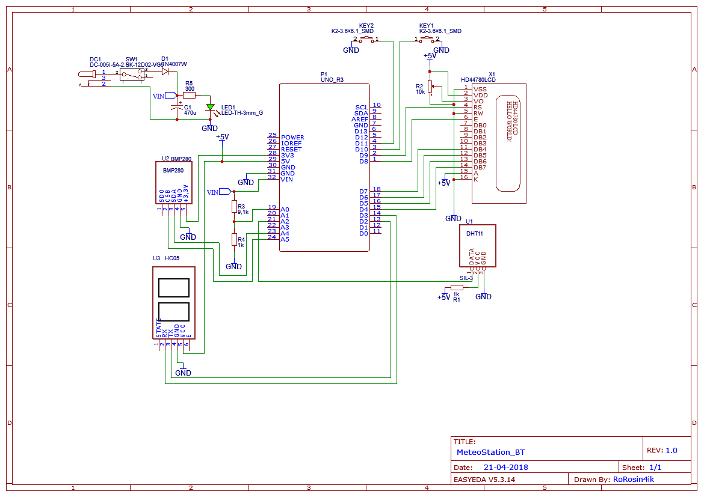
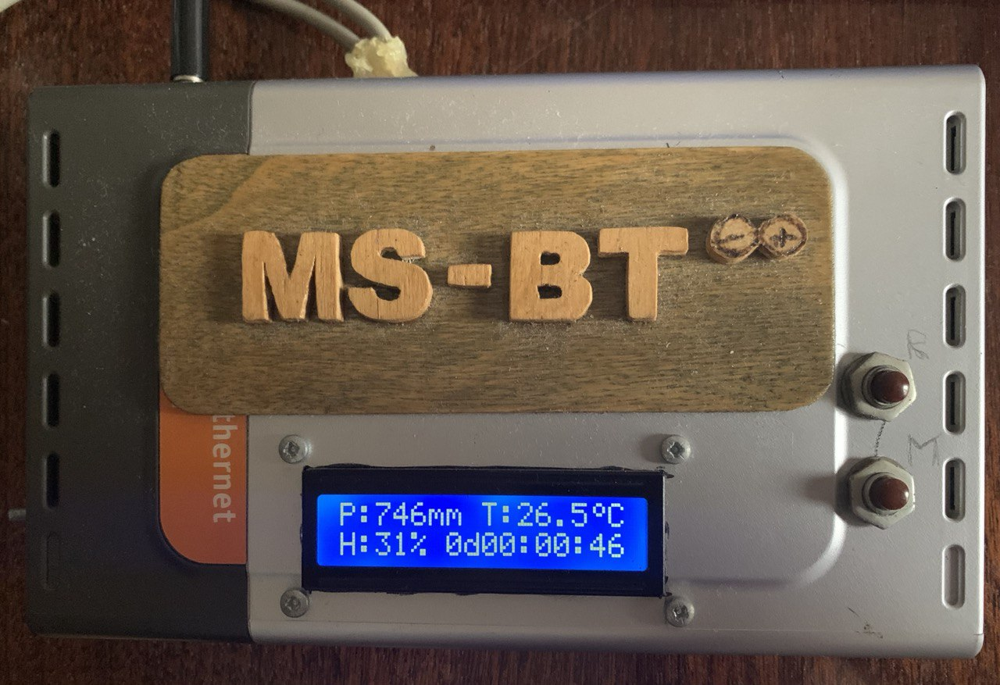
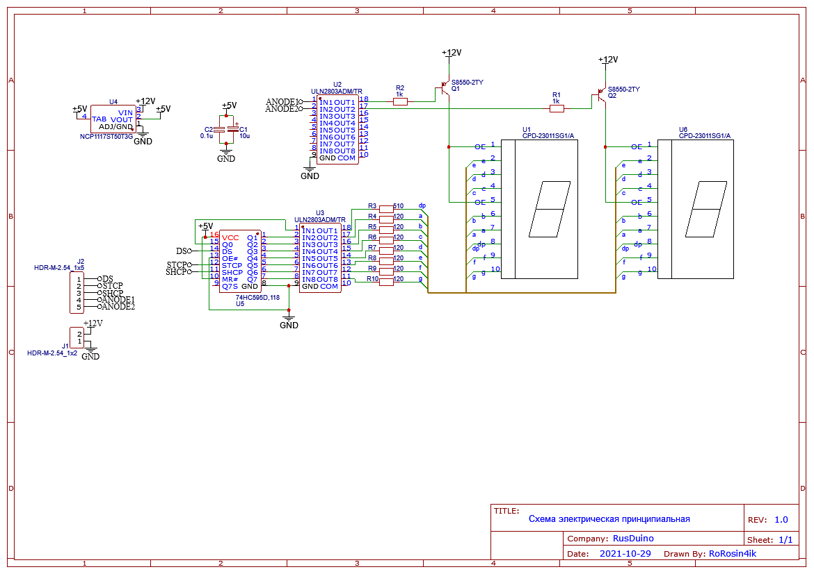
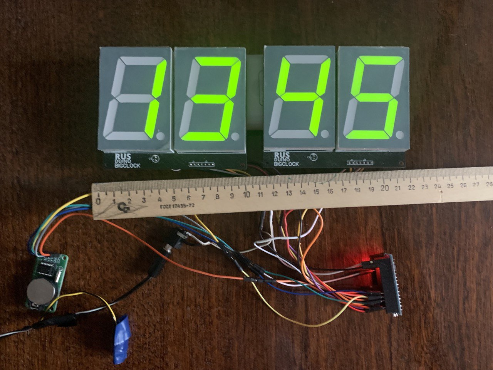
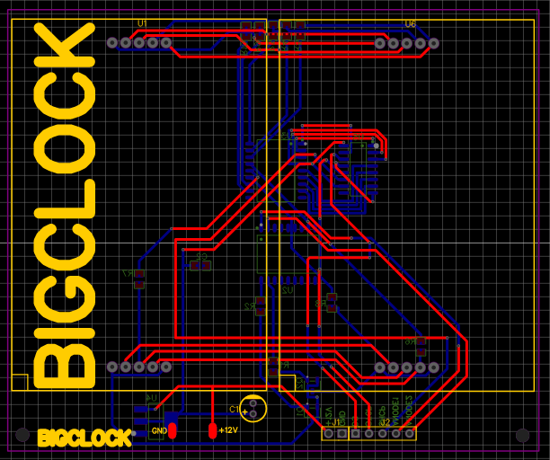
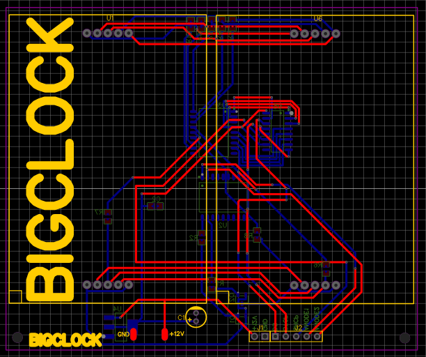

Антон Сахно
Ученик 6 класса ГБОУ школы №1194
На данной странице представлены мои достижения в области ИТ.
Я заинтересовался IT и изучаю данную
область с 2018 года.
Проходил обучение в Softium (школа программирования) и RoboTesla (кружок робототехники).
Технологии
Изученные и используемые языки программирования, платформы и фреймворки:
Языки программирования:


Платформы:
Проекты
"Метеостанция" на Arduino
Данный проект собран на базе платы Arduino Uno, а также модулей датчиков DHT11 и BMP280 и позволяет отображать на двухстрочном дисплее температуру и влажность воздуха, а также атмосферное давление. Наличие двух кнопок управления позволяет переключать режим отображения параметров (текущие, минимальные и максимальные показатели).
Программный код для этого проекта был написан мною самостоятельно в среде Arduino IDE. Для обработки данных с датчиков и отображения информации на дисплее были использованы стандартные библиотеки из пакета Arduino.
Схема
Материалы проекта на GitHub.com


Основной блок
Блок датчиков
Часы на Arduino и больших семисегметных индикаторах
Данный проект собран на базе платы Arduino Nano и модуля RTC.
На базе взятой из интернета и доработанной мною схемы была разведена (и заказана на заводе) печатная плата.
Программный код для этого проекта также был написан мною самостоятельно в среде Arduino IDE.
Схема
Материалы проекта на GitHub.com


Общий вид
